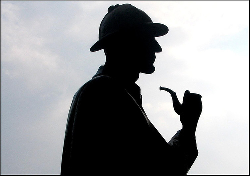

Part I.
To Sherlock Holmes she is always the woman. I have seldom heard him mention her under any other name. In his eyes she eclipses and predominates the whole of her sex. It was not that he felt any emotion akin to love for Irene Adler. All emotions, and that one particularly, were abhorrent to his cold, precise but admirably balanced mind. He was, I take it, the most perfect reasoning and observing machine that the world has seen, but as a lover he would have placed himself in a false position. He never spoke of the softer passions, save with a gibe and a sneer. They were admirable things for the observer—excellent for drawing the veil from men’s motives and actions. But for the trained reasoner to admit such intrusions into his own delicate and finely adjusted temperament was to introduce a distracting factor which might throw a doubt upon all his mental results. Grit in a sensitive instrument, or a crack in one of his own high-power lenses, would not be more disturbing than a strong emotion in a nature such as his. And yet there was but one woman to him, and that woman was the late Irene Adler, of dubious and questionable memory.

I had seen little of Holmes lately. My marriage had drifted us away from each other. My own complete happiness, and the home-centred interests which rise up around the man who first finds himself master of his own establishment, were sufficient to absorb all my attention, while Holmes, who loathed every form of society with his whole Bohemian soul, remained in our lodgings in Baker Street, buried among his old books, and alternating from week to week between cocaine and ambition, the drowsiness of the drug, and the fierce energy of his own keen nature. He was still, as ever, deeply attracted by the study of crime, and occupied his immense faculties and extraordinary powers of observation in following out those clues, and clearing up those mysteries which had been abandoned as hopeless by the official police. From time to time I heard some vague account of his doings: of his summons to Odessa in the case of the Trepoff murder, of his clearing up of the singular tragedy of the Atkinson brothers at Trincomalee, and finally of the mission which he had accomplished so delicately and successfully for the reigning family of Holland. Beyond these signs of his activity, however, which I merely shared with all the readers of the daily press, I knew little of my former friend and companion.One night—it was on the twentieth of March, 1888—I was returning from a journey to a patient (for I had now returned to civil practice), when my way led me through Baker Street. As I passed the well-remembered door, which must always be associated in my mind with my wooing, and with the dark incidents of the Study in Scarlet, I was seized with a keen desire to see Holmes again, and to know how he was employing his extraordinary powers. His rooms were brilliantly lit, and, even as I looked up, I saw his tall, spare figure pass twice in a dark silhouette against the blind. He was pacing the room swiftly, eagerly, with his head sunk upon his chest and his hands clasped behind him. To me, who knew his every mood and habit, his attitude and manner told their own story. He was at work again. He had risen out of his drug-created dreams and was hot upon the scent of some new problem. I rang the bell and was shown up to the chamber which had formerly been in part my own.
His manner was not effusive. It seldom was; but he was glad, I think, to see me. With hardly a word spoken, but with a kindly eye, he waved me to an armchair, threw across his case of cigars, and indicated a spirit case and a gasogene in the corner. Then he stood before the fire and looked me over in his singular introspective fashion.
Wedlock suits you,
he remarked. I think, Watson, that you
have put on seven and a half pounds since I saw you.
Seven!
I answered.
Indeed, I should have thought a little more. Just a trifle more, I
fancy, Watson. And in practice again, I observe. You did not tell me that you
intended to go into harness.
Then, how do you know?
I see it, I deduce it. How do I know that you have been getting yourself
very wet lately, and that you have a most clumsy and careless servant
girl?
My dear Holmes,
said I, this is too much. You would
certainly have been burned, had you lived a few centuries ago. It is true that
I had a country walk on Thursday and came home in a dreadful mess, but as I
have changed my clothes I can’t imagine how you deduce it. As to Mary
Jane, she is incorrigible, and my wife has given her notice, but there, again,
I fail to see how you work it out.
He chuckled to himself and rubbed his long, nervous hands together.
It is simplicity itself,
said he; my eyes tell me that on
the inside of your left shoe, just where the firelight strikes it, the leather
is scored by six almost parallel cuts. Obviously they have been caused by
someone who has very carelessly scraped round the edges of the sole in order to
remove crusted mud from it. Hence, you see, my double deduction that you had
been out in vile weather, and that you had a particularly malignant
boot-slitting specimen of the London slavey. As to your practice, if a
gentleman walks into my rooms smelling of iodoform, with a black mark of
nitrate of silver upon his right forefinger, and a bulge on the right side of
his top-hat to show where he has secreted his stethoscope, I must be dull,
indeed, if I do not pronounce him to be an active member of the medical
profession.
I could not help laughing at the ease with which he explained his process of
deduction. When I hear you give your reasons,
I remarked,
the thing always appears to me to be so ridiculously simple that I could
easily do it myself, though at each successive instance of your reasoning I am
baffled until you explain your process. And yet I believe that my eyes are as
good as yours.
Quite so,
he answered, lighting a cigarette, and throwing himself
down into an armchair. You see, but you do not observe. The distinction
is clear. For example, you have frequently seen the steps which lead up from
the hall to this room.
Frequently.
How often?
Well, some hundreds of times.
Then how many are there?
How many? I don’t know.
Quite so! You have not observed. And yet you have seen. That is just my
point. Now, I know that there are seventeen steps, because I have both seen and
observed. By the way, since you are interested in these little problems, and
since you are good enough to chronicle one or two of my trifling experiences,
you may be interested in this.
He threw over a sheet of thick,
pink-tinted notepaper which had been lying open upon the table. It came
by the last post,
said he. Read it aloud.
The note was undated, and without either signature or address.
There will call upon you to-night, at a quarter to eight
o’clock,
it said, a gentleman who desires to consult you
upon a matter of the very deepest moment. Your recent services to one of the
royal houses of Europe have shown that you are one who may safely be trusted
with matters which are of an importance which can hardly be exaggerated. This
account of you we have from all quarters received. Be in your chamber then at
that hour, and do not take it amiss if your visitor wear a mask.
This is indeed a mystery,
I remarked. What do you imagine
that it means?
I have no data yet. It is a capital mistake to theorise before one has
data. Insensibly one begins to twist facts to suit theories, instead of
theories to suit facts. But the note itself. What do you deduce from it?
I carefully examined the writing, and the paper upon which it was written.
The man who wrote it was presumably well to do,
I remarked,
endeavouring to imitate my companion’s processes. Such paper could
not be bought under half a crown a packet. It is peculiarly strong and
stiff.
Peculiar—that is the very word,
said Holmes. It is
not an English paper at all. Hold it up to the light.
I did so, and saw a large E
with a small g,
a
P,
and a large G
with a small t
woven
into the texture of the paper.
What do you make of that?
asked Holmes.
The name of the maker, no doubt; or his monogram, rather.
Not at all. The ‘G’ with the small ‘t’ stands
for ‘Gesellschaft,’ which is the German for ‘Company.’
It is a customary contraction like our ‘Co.’ ‘P,’ of
course, stands for ‘Papier.’ Now for the ‘Eg.’ Let us
glance at our Continental Gazetteer.
He took down a heavy brown volume
from his shelves. Eglow, Eglonitz—here we are, Egria. It is in a
German-speaking country—in Bohemia, not far from Carlsbad.
‘Remarkable as being the scene of the death of Wallenstein, and for its
numerous glass-factories and paper-mills.’ Ha, ha, my boy, what do you
make of that?
His eyes sparkled, and he sent up a great blue triumphant
cloud from his cigarette.
The paper was made in Bohemia,
I said.
Precisely. And the man who wrote the note is a German. Do you note the
peculiar construction of the sentence—‘This account of you we have
from all quarters received.’ A Frenchman or Russian could not have
written that. It is the German who is so uncourteous to his verbs. It only
remains, therefore, to discover what is wanted by this German who writes upon
Bohemian paper and prefers wearing a mask to showing his face. And here he
comes, if I am not mistaken, to resolve all our doubts.
As he spoke there was the sharp sound of horses’ hoofs and grating wheels against the curb, followed by a sharp pull at the bell. Holmes whistled.
A pair, by the sound,
said he. Yes,
he continued,
glancing out of the window. A nice little brougham and a pair of
beauties. A hundred and fifty guineas apiece. There’s money in this case,
Watson, if there is nothing else.
I think that I had better go, Holmes.
Not a bit, Doctor. Stay where you are. I am lost without my Boswell. And
this promises to be interesting. It would be a pity to miss it.
But your client—
Never mind him. I may want your help, and so may he. Here he comes. Sit
down in that armchair, Doctor, and give us your best attention.
A slow and heavy step, which had been heard upon the stairs and in the passage, paused immediately outside the door. Then there was a loud and authoritative tap.
Come in!
said Holmes.
A man entered who could hardly have been less than six feet six inches in height, with the chest and limbs of a Hercules. His dress was rich with a richness which would, in England, be looked upon as akin to bad taste. Heavy bands of astrakhan were slashed across the sleeves and fronts of his double-breasted coat, while the deep blue cloak which was thrown over his shoulders was lined with flame-coloured silk and secured at the neck with a brooch which consisted of a single flaming beryl. Boots which extended halfway up his calves, and which were trimmed at the tops with rich brown fur, completed the impression of barbaric opulence which was suggested by his whole appearance. He carried a broad-brimmed hat in his hand, while he wore across the upper part of his face, extending down past the cheekbones, a black vizard mask, which he had apparently adjusted that very moment, for his hand was still raised to it as he entered. From the lower part of the face he appeared to be a man of strong character, with a thick, hanging lip, and a long, straight chin suggestive of resolution pushed to the length of obstinacy.
You had my note?
he asked with a deep harsh voice and a strongly
marked German accent. I told you that I would call.
He looked
from one to the other of us, as if uncertain which to address.
Pray take a seat,
said Holmes. This is my friend and
colleague, Dr. Watson, who is occasionally good enough to help me in my cases.
Whom have I the honour to address?
You may address me as the Count Von Kramm, a Bohemian nobleman. I
understand that this gentleman, your friend, is a man of honour and discretion,
whom I may trust with a matter of the most extreme importance. If not, I should
much prefer to communicate with you alone.
I rose to go, but Holmes caught me by the wrist and pushed me back into my
chair. It is both, or none,
said he. You may say before
this gentleman anything which you may say to me.
The Count shrugged his broad shoulders. Then I must begin,
said
he, by binding you both to absolute secrecy for two years; at the end of
that time the matter will be of no importance. At present it is not too much to
say that it is of such weight it may have an influence upon European
history.
I promise,
said Holmes.
And I.
You will excuse this mask,
continued our strange visitor.
The august person who employs me wishes his agent to be unknown to you,
and I may confess at once that the title by which I have just called myself is
not exactly my own.
I was aware of it,
said Holmes dryly.
The circumstances are of great delicacy, and every precaution has to be
taken to quench what might grow to be an immense scandal and seriously
compromise one of the reigning families of Europe. To speak plainly, the matter
implicates the great House of Ormstein, hereditary kings of Bohemia.
I was also aware of that,
murmured Holmes, settling himself down
in his armchair and closing his eyes.
Our visitor glanced with some apparent surprise at the languid, lounging figure of the man who had been no doubt depicted to him as the most incisive reasoner and most energetic agent in Europe. Holmes slowly reopened his eyes and looked impatiently at his gigantic client.
If your Majesty would condescend to state your case,
he remarked,
I should be better able to advise you.
The man sprang from his chair and paced up and down the room in uncontrollable
agitation. Then, with a gesture of desperation, he tore the mask from his face
and hurled it upon the ground. You are right,
he cried; I
am the King. Why should I attempt to conceal it?
Why, indeed?
murmured Holmes. Your Majesty had not spoken
before I was aware that I was addressing Wilhelm Gottsreich Sigismond von
Ormstein, Grand Duke of Cassel-Felstein, and hereditary King of Bohemia.
But you can understand,
said our strange visitor, sitting down
once more and passing his hand over his high white forehead, you can
understand that I am not accustomed to doing such business in my own person.
Yet the matter was so delicate that I could not confide it to an agent without
putting myself in his power. I have come incognito from Prague for the
purpose of consulting you.
Then, pray consult,
said Holmes, shutting his eyes once more.
The facts are briefly these: Some five years ago, during a lengthy visit
to Warsaw, I made the acquaintance of the well-known adventuress, Irene Adler.
The name is no doubt familiar to you.
Kindly look her up in my index, Doctor,
murmured Holmes without
opening his eyes. For many years he had adopted a system of docketing all
paragraphs concerning men and things, so that it was difficult to name a
subject or a person on which he could not at once furnish information. In this
case I found her biography sandwiched in between that of a Hebrew rabbi and
that of a staff-commander who had written a monograph upon the deep-sea fishes.
Let me see!
said Holmes. Hum! Born in New Jersey in the
year 1858. Contralto—hum! La Scala, hum! Prima donna Imperial Opera of
Warsaw—yes! Retired from operatic stage—ha! Living in
London—quite so! Your Majesty, as I understand, became entangled with
this young person, wrote her some compromising letters, and is now desirous of
getting those letters back.
Precisely so. But how—
Was there a secret marriage?
None.
No legal papers or certificates?
None.
Then I fail to follow your Majesty. If this young person should produce
her letters for blackmailing or other purposes, how is she to prove their
authenticity?
There is the writing.
Pooh, pooh! Forgery.
My private note-paper.
Stolen.
My own seal.
Imitated.
My photograph.
Bought.
We were both in the photograph.
Oh, dear! That is very bad! Your Majesty has indeed committed an
indiscretion.
I was mad—insane.
You have compromised yourself seriously.
I was only Crown Prince then. I was young. I am but thirty now.
It must be recovered.
We have tried and failed.
Your Majesty must pay. It must be bought.
She will not sell.
Stolen, then.
Five attempts have been made. Twice burglars in my pay ransacked her
house. Once we diverted her luggage when she travelled. Twice she has been
waylaid. There has been no result.
No sign of it?
Absolutely none.
Holmes laughed. It is quite a pretty little problem,
said he.
But a very serious one to me,
returned the King reproachfully.
Very, indeed. And what does she propose to do with the
photograph?
To ruin me.
But how?
I am about to be married.
So I have heard.
To Clotilde Lothman von Saxe-Meningen, second daughter of the King of
Scandinavia. You may know the strict principles of her family. She is herself
the very soul of delicacy. A shadow of a doubt as to my conduct would bring the
matter to an end.
And Irene Adler?
Threatens to send them the photograph. And she will do it. I know that
she will do it. You do not know her, but she has a soul of steel. She has the
face of the most beautiful of women, and the mind of the most resolute of men.
Rather than I should marry another woman, there are no lengths to which she
would not go—none.
You are sure that she has not sent it yet?
I am sure.
And why?
Because she has said that she would send it on the day when the
betrothal was publicly proclaimed. That will be next Monday.
Oh, then we have three days yet,
said Holmes with a yawn.
That is very fortunate, as I have one or two matters of importance to
look into just at present. Your Majesty will, of course, stay in London for the
present?
Certainly. You will find me at the Langham under the name of the Count
Von Kramm.
Then I shall drop you a line to let you know how we progress.
Pray do so. I shall be all anxiety.
Then, as to money?
You have carte blanche.
Absolutely?
I tell you that I would give one of the provinces of my kingdom to have
that photograph.
And for present expenses?
The King took a heavy chamois leather bag from under his cloak and laid it on the table.
There are three hundred pounds in gold and seven hundred in
notes,
he said.
Holmes scribbled a receipt upon a sheet of his note-book and handed it to him.
And Mademoiselle’s address?
he asked.
Is Briony Lodge, Serpentine Avenue, St. John’s Wood.
Holmes took a note of it. One other question,
said he. Was
the photograph a cabinet?
It was.
Then, good-night, your Majesty, and I trust that we shall soon have some
good news for you. And good-night, Watson,
he added, as the wheels of
the royal brougham rolled down the street. If you will be good enough to
call to-morrow afternoon at three o’clock I should like to chat this
little matter over with you.